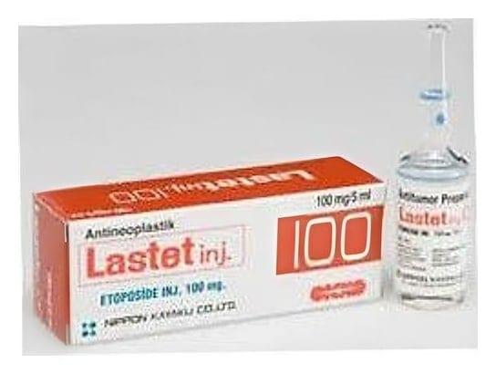

Lastet 100 mg Enjektabl, 1 Adet

Ne için kullanılır
KT · Bölüm 12. LASTET 'i kullanmadan önce dikkat edilmesi gerekenler 3. LASTET nasıl kullanılır? 4. Olası yan etkiler nelerdir?

2. LASTET 'i kullanmadan önce dikkat edilmesi gerekenler 3. LASTET nasıl kullanılır? 4. Olası yan etkiler nelerdir?